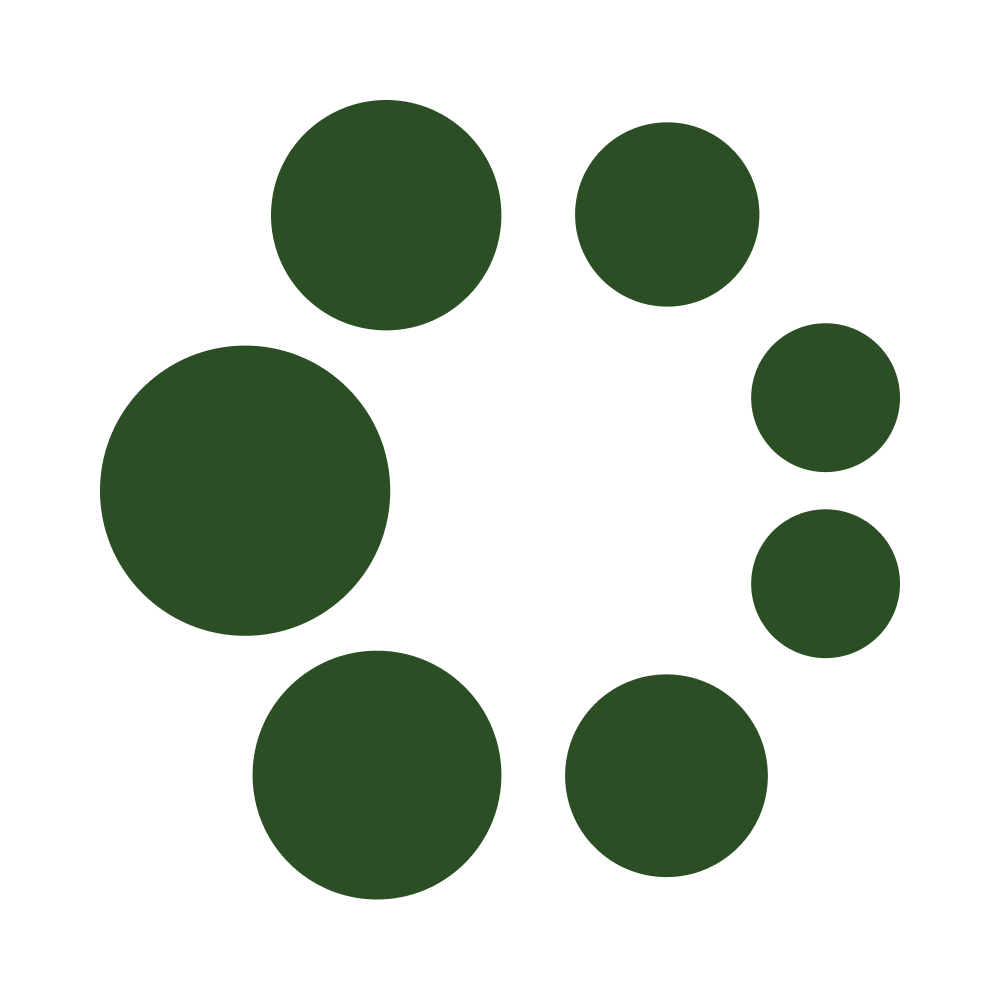
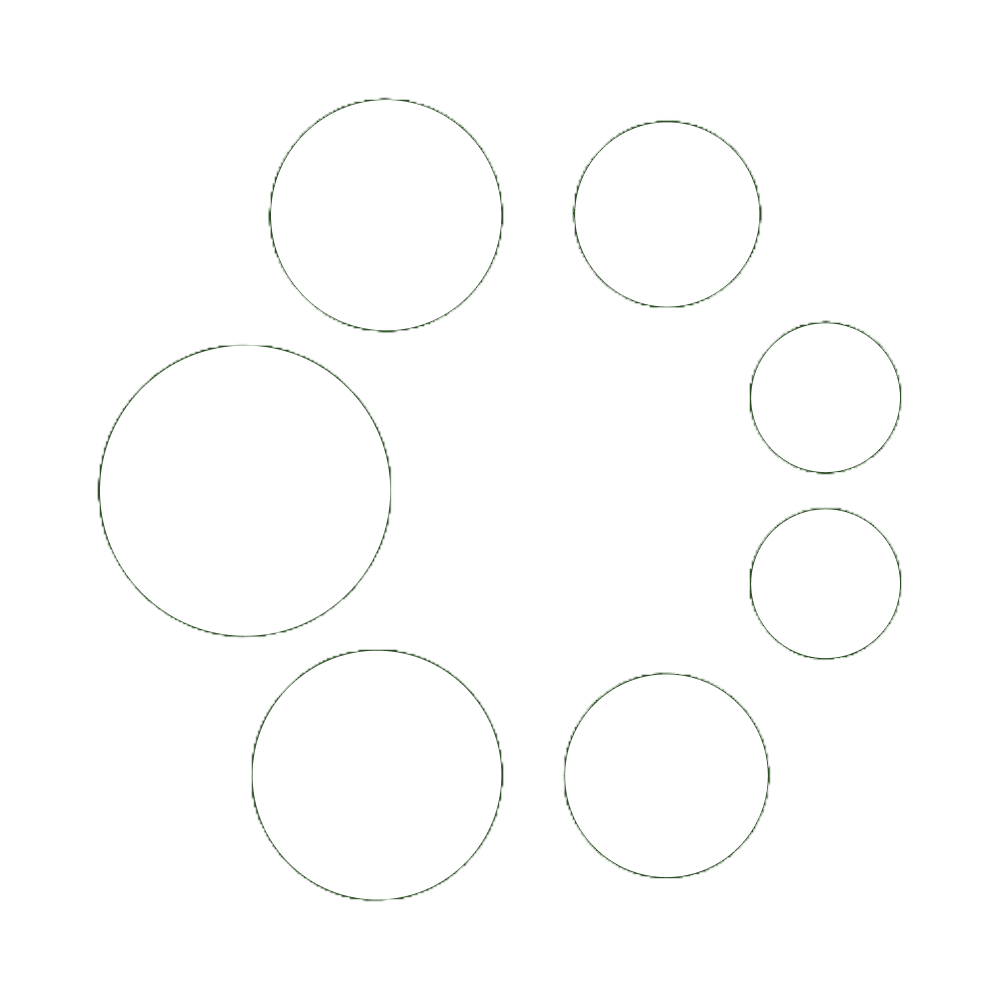

Wordmark


Symbol / mark

symbol · green symbol · white
symbol · white
faviconClearspace · sizing
Clearspace
Minimum clearspace equals the cap-height of the "O" on all sides.
Minimum reproduction size: 24px tall on screen, 8mm print.
Minimum reproduction size: 24px tall on screen, 8mm print.